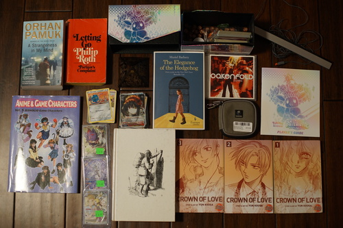

KONNICHIWA!!!!!! It's me, hat!!! You remember me ね??
If for some reason you missed it, there's a huge Sakuracon post over in the navigation bar (or archive if you're from the future).
As always, I've got some awesome hauls coming your way!
Will I finally read a book from Orhan Bey that isn't a picture book?
I wish they printed the art bigger in these so I could never buy another pokemon card again
Lots of good tips on designing your gyaruge characters from 2001!
the N page of my boys binder is poppin!!
I found volume 3 a long time ago and didn't buy it because I'd never find 1 and 2. I'm so happy! I want to read more Yun Kouga!!!
Bought for Ryan's dad
free with purchase. I managed to get her off the dress without extending her claws a few seconds later.
Shown from behind. It's an xs and does fit but is a little tight. Waistlines always hit at my rib cage and I can't lose weight around my ribs so I'm not sure how uncomfortable this will be. It's really nicely made though. Maybe I'll just have some ribs removed.
Branding removed. I like the colors used. I can't figure out if it's a boat, sabrina, or mock neckline. So much terminology...